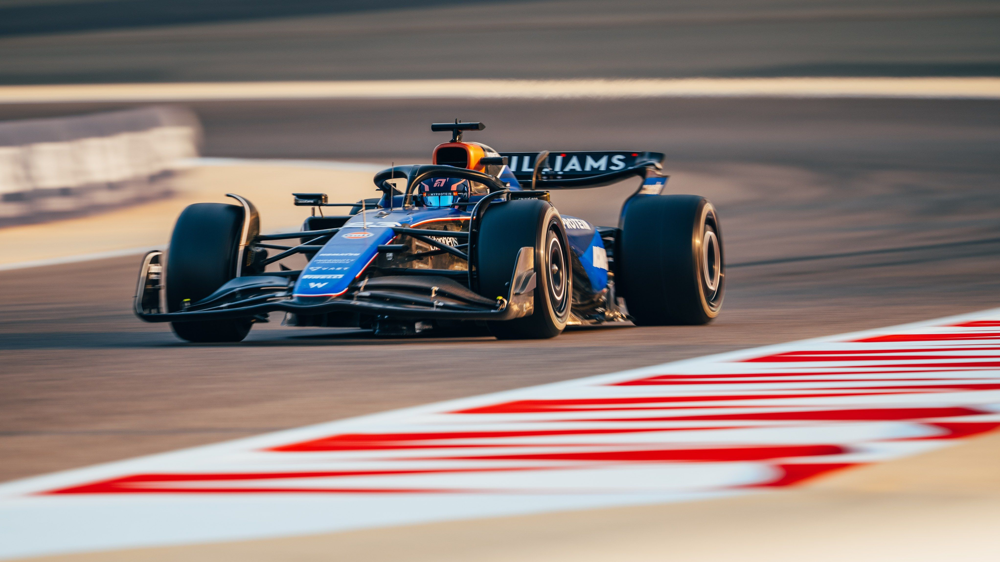

Williams is on a road to recovery with new investments and a renewed focus on performance. The team is determined to climb up the standings this season.

Williams is on a road to recovery with new investments and a renewed focus on performance. The team is determined to climb up the standings this season.

Scuderia AlphaTauri has completed their pre-season testing with promising results. The team is looking forward to a competitive season ahead.
Alpine F1 Team has introduced several technical innovations for the 2024 season. The team is hopeful that these changes will improve their performance on the track.
Aston Martin has made bold predictions for the 2024 season, aiming for multiple podium finishes. The team is working hard to achieve their ambitious goals.
McLaren has announced a new driver lineup for the 2024 season. The team is confident that the fresh talent will bring new energy and success.

Ferrari has outlined their strategy for the 2024 season, focusing on reliability and consistency. Charles Leclerc and Carlos Sainz are eager to bring the team back to the top.
Red Bull Racing has unveiled a new aerodynamic package that promises to enhance their performance. Max Verstappen is optimistic about the team's prospects this season.
Mercedes has started the 2024 season with a commanding victory in the first race. Lewis Hamilton showcased his exceptional driving skills, securing the top podium spot.